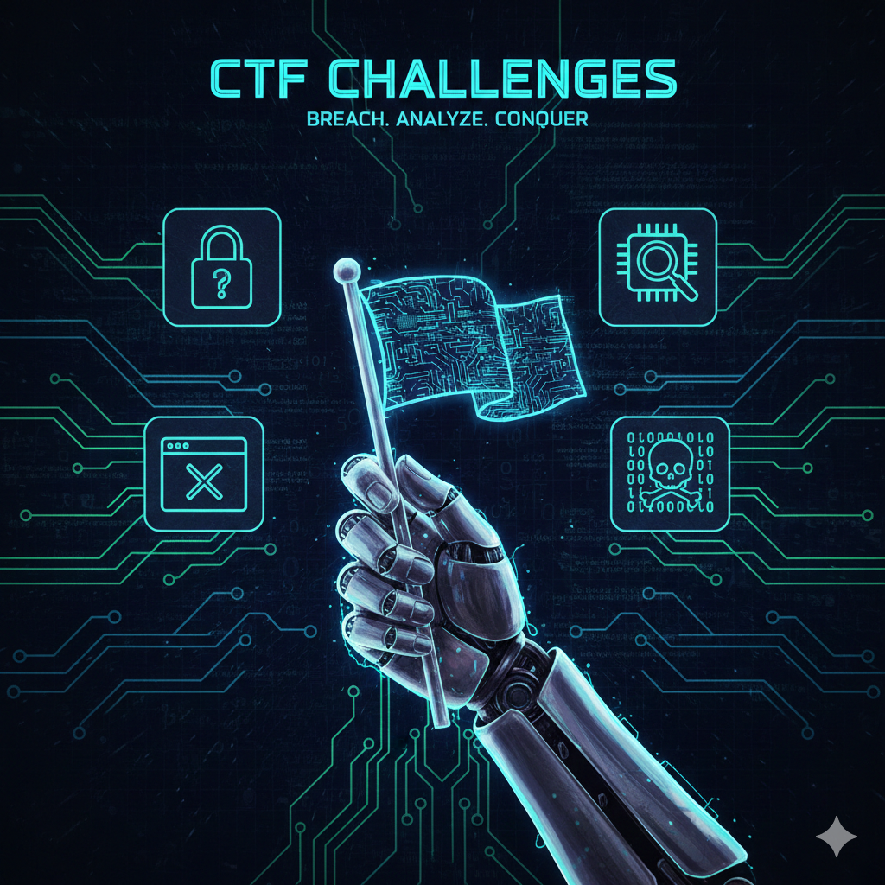

What are CTF Challenges?
Capture The Flag (CTF) is a type of cybersecurity competition that challenges participants to solve various problems ("challenges") to find a specific string of text, known as a **flag**. These competitions are an excellent way to learn, practice, and test cybersecurity skills across different domains.
Common Challenge Categories
-
Web Exploitation (Web)
Challenges involving vulnerabilities in web applications, such as SQL Injection and Cross-Site Scripting (XSS).
-
Cryptography (Crypto)
Solving ciphers, breaking encryption, and analyzing cryptosystems.
- Classic Ciphers (e.g., Caesar, Vigenère)
- Modern Ciphers (e.g., RSA, AES)
- Key Exchange Problems
-
Reverse Engineering (Re)
Analyzing compiled programs (executables) to understand their logic and find the flag.
-
Binary Exploitation (Pwn)
Exploiting software vulnerabilities like buffer overflows to gain control of a program.
-
Forensics (Forensic)
Analyzing disk images, network traffic captures (pcap), and memory dumps to uncover hidden information.
Less Common Challenge Categories
-
Open Source Inteligence (Osint)
Finding information from publically avaliable sources (X, Facebook, Google Maps, etc...)
-
Miscellaneous (Misc)
Anything and everything else!
More About CTFs
Live Tableau Visualization
Below is an example of an interactive Tableau visualization embedded directly into the page. This one shows worldwide web traffic data (example visualization).